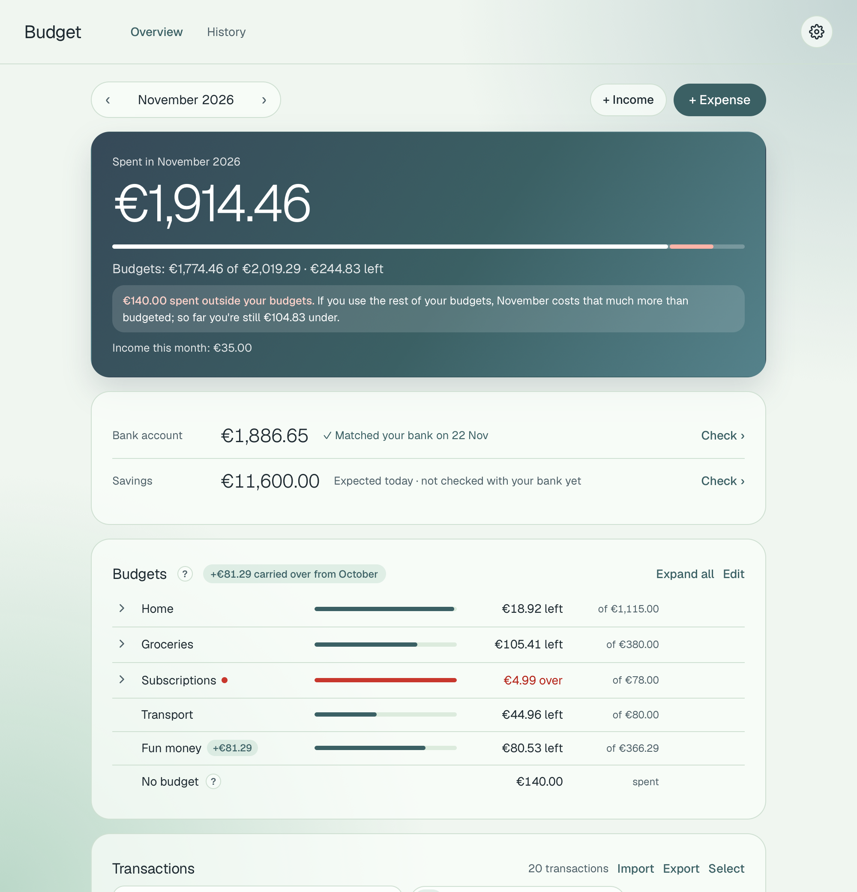
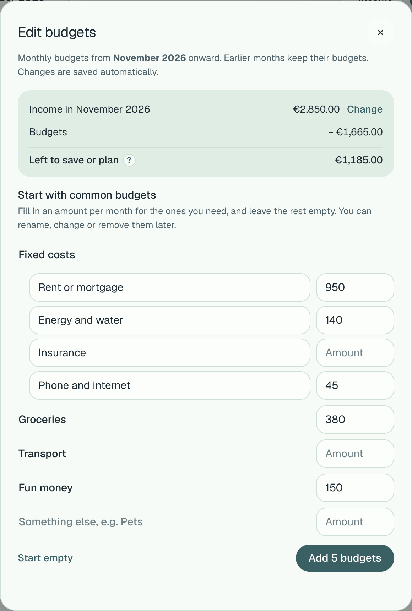
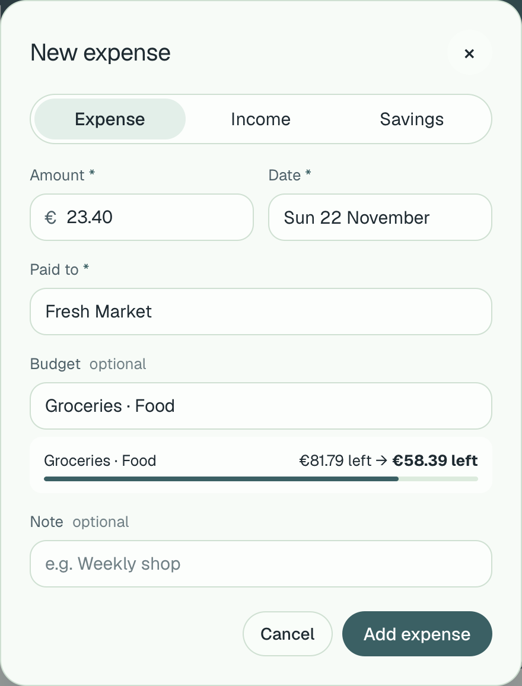
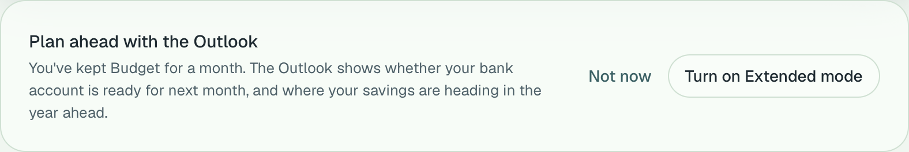
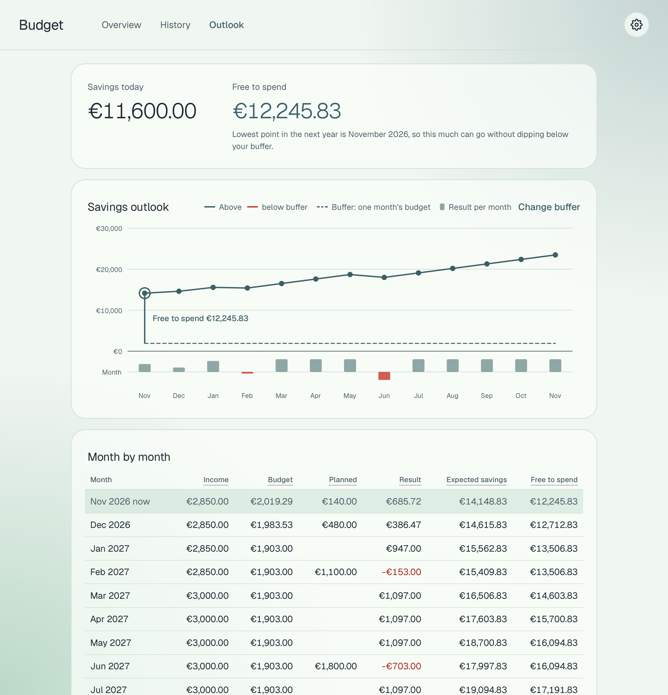
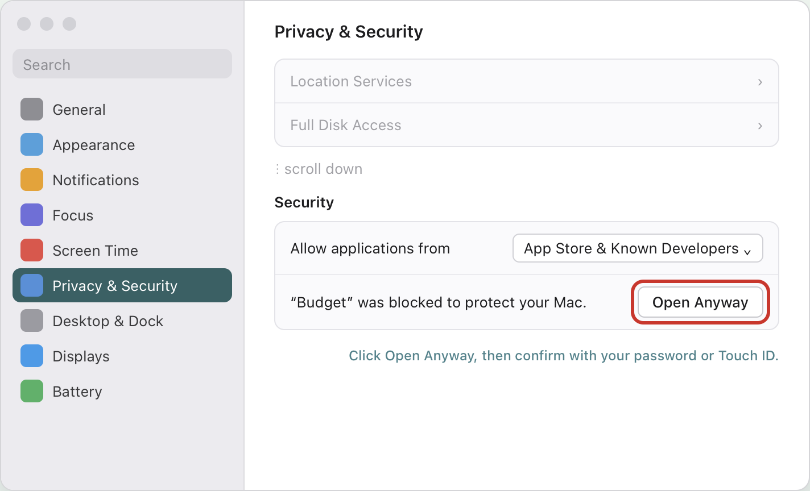
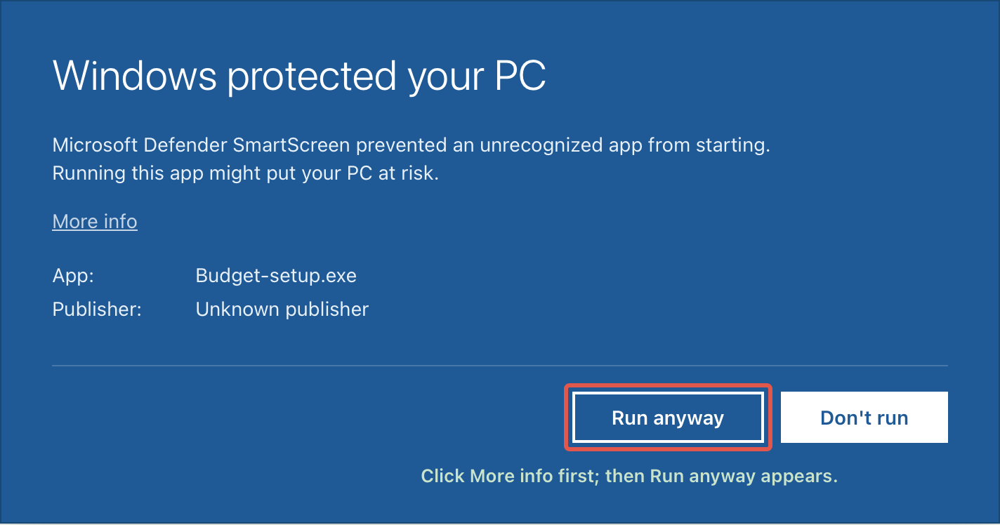

A calm budget, from your very first euro.
Budget starts simple, even if you've never kept a budget, and grows with you when you're ready. No account, no subscription, no cloud: your data stays on your computer.

Everything a budget needs. Nothing more.
Plan what you spend, add what you spent, and see what's left. Small buttons explain every word in plain language.
Start from your income
Enter what comes in each month, then give each kind of spending an amount. Budget suggests a few common ones, so you only fill in numbers.
- See straight away whether your budgets fit your income
- What's left goes to savings or bigger plans
- Change a budget from any month on; the past stays as it was

Add what you spend, see the effect first
Before you save, Budget shows what's left in the budget, in red only if it would go over. The page stays calm until something needs your attention.
- Known payees fill in the budget you used last time
- Import your bank's export (ING for now), with duplicates left out
- Look back on every month and every budget in History

It grows with you
When something more becomes useful, like keeping your bank balance or planning ahead, Budget offers it. One thing at a time, and Not now puts it away.

Ready for more? It's all there.
Turn on Extended mode and Budget looks a year ahead: your expected income, planned costs like a holiday, and how much you can freely spend while keeping a safety buffer.

Ready for next month?
In the last week of the month, Budget tells you how much is short or spare, and moves it to or from your savings in one click.
Carry leftovers over
What's left of a budget moves on to next month, so you can save up within it.
Split a purchase
One receipt over several budgets, and bills paid early that count for the month they're meant for.
Bank and savings balances
Compare with your bank now and then, and Budget tells you when a transaction is missing.
Private by design.
No sign-up, no subscription, no cloud. Budget runs on your computer only.
A copy of each day you use it, and your own backup to move to a new computer.
English or Dutch, your currency, and numbers written your way.
Free to use, and every line is on GitHub.
Installing
On a Mac
- Download Budget.dmg and open it.
- Drag Budget to Applications.
- Open Budget.
The first time, macOS says it can't open Budget, because the app isn't signed with a paid Apple Developer account. Click Done, open System Settings → Privacy & Security, scroll down to Security and click Open Anyway. You only have to do this once.

On Windows
- Download Budget-setup.exe and open it.
- Follow the steps. Budget installs for you only, no administrator needed.
- Open Budget from the Start menu.
Budget isn't signed with a paid certificate yet, so Windows may warn that it protected your PC. Click More info, then Run anyway. Your browser may also ask whether to keep the download: choose Keep.
